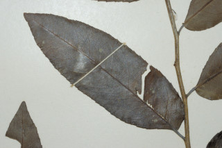
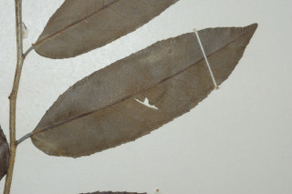
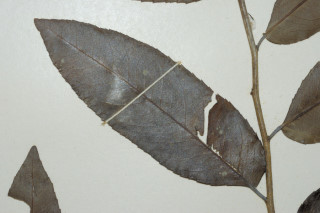
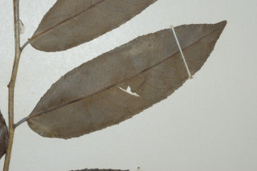

Trees up to 12 m tall.
12 ಮೀ. ಎತ್ತರದವರೆಗೆ ಬೆಳೆಯುವ ಮರಗಳು.
12 മീറ്റര് വരെ ഉയരമുളള മരങ്ങള്.
மரங்கள் 12 மீ. வரை வளரக்கூடியது
Bark dark grey with horizontal lenticels.
ತೊಗಟೆ ಕಡು ಬೂದು ಬಣ್ಣದಲ್ಲಿದ್ದು ಅಡ್ಡವಾದ ವಾಯುವಿನಿಮಯ ಸೂಕ್ಷ್ಮ ಬೆಂಡುರಂಧ್ರಗಳನ್ನು ಹೊದಿರುತ್ತದೆ.
തിരശ്ചീനശ്വസനരന്ധ്രങ്ങളുളള, ഇരുണ്ട നരച്ച ചാര നിറത്തിലുളള പുറംതൊലി.
மரத்தின் பட்டை கரும்சாம்பல் நிறமானது மற்றும் கிடைமட்டமான லெண்டிசெல் கொண்டது.
Branches slender drooping; branchlets angular, pubescent when young.
ಕವಲುಗಳು ತೆಳುವಾಗಿರುತ್ತವೆ ಮತ್ತು ಜೋತಾಡುತ್ತಿರುತ್ತವೆ; ಕಿರುಕೊಂಬೆಗಳು ಕೋನಯುಕ್ತವಾಗಿದ್ದು ಎಳೆಯದಾಗಿದ್ದಾಗ ಮೃದುತುಪ್ಪಳದಿಂದ ಕೂಡಿರುತ್ತವೆ.
ശാഖകള് നേര്ത്തതും, തൂങ്ങിനില്ക്കുന്നവയുമാണ്; ഇളതായിരിക്കുമ്പോള് നനുത്ത രോമിലമായ കോണുളള ഉപശാഖകള്.
கிளைகள் மெல்லியது, தொங்கியவை; சிறிய நுனிக்கிளைகள் கோணங்களுடையவை, குறுத்து நிலையில் உரோமங்களுடையவை.
Leaves simple, alternate, distichous; stipule triangular, acute, caducous; petiole 0.4-1 cm long, nearly glabrous, planoconvex in cross section; lamina 5- 9.5 x 1.5-3.5 cm, elliptic-oblong to elliptic-ovate, apex acute or slightly acuminate with blunt tip, base asymmetric, margin serrate, chartaceous, dark green and shining, glabrous; midrib nearly flat above; secondary_nerves 9-12 pairs, slender; tertiary_nerves reticulate.
ಎಲೆಗಳು ಸರಳವಾಗಿದ್ದು ಪರ್ಯಾಯ ಜೋಡನಾ ವ್ಯವಸ್ಥೆಯಲ್ಲಿದ್ದು ಕಂಡದ ಎರಡೂ ಕಡೆ ಎದುರು ಬದರಿನ ಲಂಬಸಾಲಿನಲ್ಲಿರುತ್ತವೆ;ಕಾವಿನೆಲೆಗಳು ತ್ರಿಕೋನಾಕಾರದಲ್ಲಿದ್ದು, ಚೂಪಾಗಿರುತ್ತವೆ ಮತ್ತು ಉದುರಿ ಹೋಗುವ ಮಾದರಿಯವುಗಳಾಗಿರುತ್ತವೆ; ತೊಟ್ಟುಗಳು 0.4 – 1 ಸೆಂಮೀ.ಉದ್ದವಿದ್ದು ಬಹುಮಟ್ಟಿಗೆ ರೋಮರಹಿತವಾಗಿರುತ್ತವೆ ಮತ್ತು ಅಡ್ಡ ಸೀಳಿದಾಗ ಸಪಾಟ ಪೀನ ಮಧ್ಯದ ಆಕಾರದಲ್ಲಿರುತ್ತವೆ; ಪತ್ರಗಳು 5-9.5 X 1.5 –3.5 ಸೆಂ. ಮೀ. ಗಾತ್ರ, ಅಂಡವೃತ್ತ – ಚತುರಸ್ರದಿಂದ ಅಂಡವೃತ್ತ – ಅಂಡಾಕಾರದವೆರೆಗಿನ ಆಕಾರ ಹೊಂದಿರುತ್ತವೆ; ಪತ್ರಗಳ ತುದಿ ಚೂಪಾಗಿರುತ್ತದೆ ಅಥವಾ ಕೊಂಚ ಮೊಂಡಾಗ್ರವುಳ್ಳ , ಕ್ರಮೇಣವಾಗಿ ಚೂಪಾಗುವ ಮಾದರಿಯಲ್ಲಿದ್ದು ಬುಡ ಅಸಮವಾಗಿರುತ್ತದೆ. ಅಂಚು ಗರಗಸ ದಂತಿತವಾಗಿರುತ್ತದೆ;ಮೇಲ್ಮೈ ಕಾಗದವನ್ನೋಲುವ ಮಾದರಿಯಲ್ಲಿದ್ದು ಕಡು ಹಸಿರು ಬಣ್ಣ ಮತ್ತು ಹೊಳಪನ್ನು ಹೊಂದಿ- ರುತ್ತದೆ ಮತ್ತು ರೋಮರಹಿತವಾಗಿರುತ್ತದೆ;ಮಧ್ಯನಾಳ ಪತ್ರದ ಮೇಲ್ಭಾಗದಲ್ಲಿ ಹೆಚ್ಚೂ ಕಡಿಮೆ ಚಪ್ಪಟೆಯಾಗಿರುತ್ತದೆ; ಎರಡನೇ ದರ್ಜೆಯ ನಾಳಗಳು 9-12 ಜೋಡಿಗಳಿದ್ದು ತೆಳುವಾಗಿರುತ್ತವೆ; ಮೂರನೇ ದರ್ಜೆಯ ನಾಳಗಳು ಜಾಲ ಬಂಧ ನಾಳ ವಿನ್ಯಾಸದಲ್ಲಿರುತ್ತವೆ.
ലഘുവായ ഇലകള്, ഏകാന്തരക്രമത്തില് തണ്ടിന്റെ രണ്ട് ഭാഗത്ത് മാത്രമയടുക്കിയ വിധത്തിലാണ്; അനുപര്ണ്ണങ്ങള് ത്രികോണാകാരവും നിശിതാഗ്രവുമുളളതും എളുപ്പം കൊഴിഞ്ഞ് പോകുന്നതുമാണ്; ഏതാണ്ട് അരോമിലമായ, ഛേദത്തില് ഒരു ഭാഗം പരന്നും മറുഭാഗം ഉരുണ്ടുമിരിക്കുന്ന ഘടനയുളള ഇലഞെട്ടിന് 0.4 സെ.മീ മുതല് 1 സെ.മീ വരെ നീളം; പത്രഫലകത്തിന് 5 സെ.മീ മുതല് 9.5 സെ.മീ വരെ നീളവും 1.5 സെ.മീ മുതല് 3.5 സെ.മീ വരെ വീതിയും, ആകൃതി ദീര്ഘവൃത്തീയ - ആയതാകാരംതൊട്ട് ദീര്ഘവൃത്തീയ അണ്ഡാകാരംവരെയാകാം, മുനപ്പില്ലാത്ത അറ്റത്തോടുകൂടിയ നിശിതാഗ്രമോ ചെറുതായുളള ദീര്ഘാഗ്രമോ ആവാം, പത്രാധാരം അസമമാണ്, അരികുകള് ദന്തിതവും, കടലാസ് പോലത്തെ പ്രകൃതം, തിളങ്ങുന്നുതും കടും പച്ചനിറത്തിലുളളതുമാണ്, അരോമിലം; മുകളില് ഏതാണ്ട് പരന്നിരിക്കുന്ന മുഖ്യസിര; നേര്ത്ത 9 മുതല് 12 വരെ ജോഡി ദ്വിതീയ ഞരമ്പുകള്; ത്രിതീയ ഞരമ്പുകള് ജാലിതമാണ്.
இலைகள் தனித்தவை, மாற்றுஅடுக்கமானவை, இருநெடுக்கு வரிசையிலையடுக்கம் (டைஸ்டிக்கஸ்); இலையடிச்செதில் முக்கோண வடிவானவை, கூரியது,எளிதில் உதிரக்கூடியவை; இலைக்காம்பு 0.4-1 செ.மீ. நீளமானது; உரோமங்களற்றவை, குறுக்குவெட்டுத் தோற்றத்தில் பிளேனோகான்வக்ஸ்; இலை அலகு 5-9.5 x 1.5-3.5 செ.மீ., நீள்வட்டம்-நீள்சதுர வடிவம் முதல் நீள்சதுர-முட்டை வடிவானது, அலகின் நுனி கூரியது முதல் மழுங்கிய முனையுடன் அதிக்கூரியது, அலகின் தளம் சமமற்றது, அலகின் விளிம்பு முழுமையானது, சார்ட்டேசியஸ், கரும்பச்சை நிறமானது மற்றும் பளபளப்பானது, உரோமங்களற்றது; மையநரம்பு மேற்புறத்தில் அலகின் பரப்பிற்கு சமமானது; இரண்டாம் நிலை நரம்புகள் 9-12 ஜோடிகள், மெல்லியது; மூன்றாம் நிலை நரம்புகள் வலைப்பின்னல் போன்றது.
Flower unisexual; male flowers in axillary clusters; female flowers axillary, solitary.
ಹೂಗಳು ಏಕಲಿಂಗಿಗಳಾಗಿರುತ್ತವೆ ; ಗಂಡು ಹೂಗಳು ಅಕ್ಷಾಕಂಕುಳಿನಲ್ಲಿನ ಗುಚ್ಛಗಳಲ್ಲಿರುತ್ತವೆ; ಹೆಣ್ಣು ಹೂಗಳು ಒಂಟಿಯಾಗಿರುತ್ತವೆ ಮತ್ತು ಅಕ್ಷಾಕಂಕುಳಿನಲ್ಲಿರುತ್ತವೆ.
പൂക്കള് ഏകലിംഗികളാണ്; ആണ്പൂക്കള് കക്ഷീയ കൂട്ടങ്ങളായുണ്ടാകുന്നു; പെണ്പൂക്കള് ഒറ്റക്ക് കക്ഷങ്ങളിലുണ്ടാകുന്നു.
மலர்கள் ஓர்பாலானவை, ஆண்மலர்கள் இலைக்கோணங்களில் கூட்டமாக அமைந்தவை; பெண்மலர்கள் இலைக்கோணங்களில் தனித்து காணப்படும்.
Drupe, ellipsoid, with persistent style; seed 1.
ಡ್ರೂಪ್ ಫಲಗಳು ಅಂಡವೃತ್ತದ ಆಕಾರ ಹೊಂದಿದ್ದು ಶಾಶ್ವತವಾದ ಶಲಾಕಾಗ್ರದ ಸಮೇತವಿರುತ್ತವೆ ಹಾಗೂ ಒಂದು ಬೀಜವನ್ನು ಹೊಂದಿರುತ್ತವೆ.
ഒറ്റവിത്തുളള കായ, ഉറച്ചു നില്ക്കുന്ന വര്ത്തികയുളള, ദീര്ഘഗോളാകാരത്തിലുളള ഡ്രൂപ്പ് ആണ്.
உள்ளோட்டுத்தசைகனி (ட்ரூப்), நீள்வட்ட வடிவானது, சூலக முடிச்சு நிரந்தரமாக கனியுடன் காணப்படும்; விதை ஒன்று கொண்டது.
 


